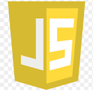
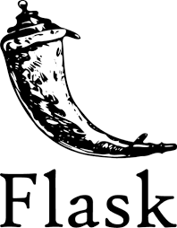
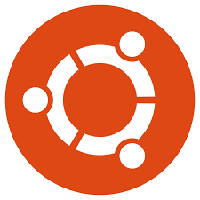
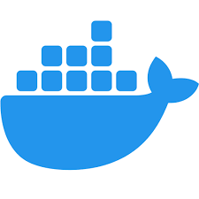
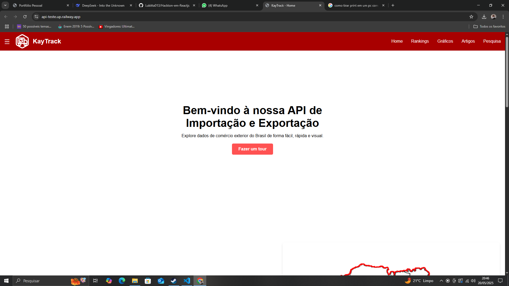
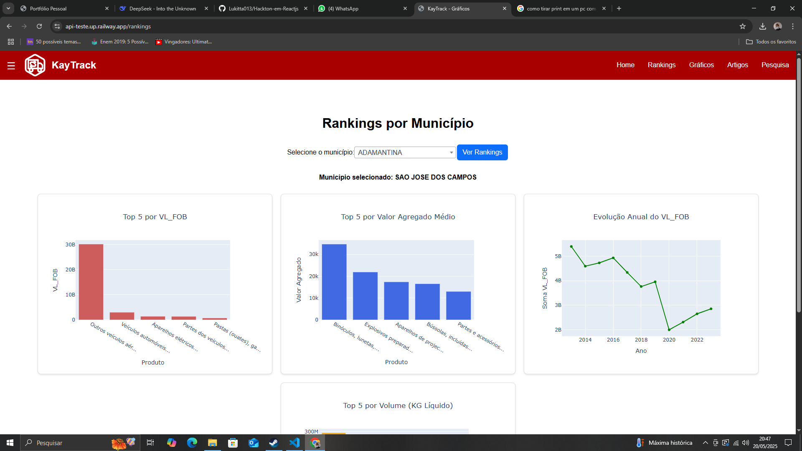
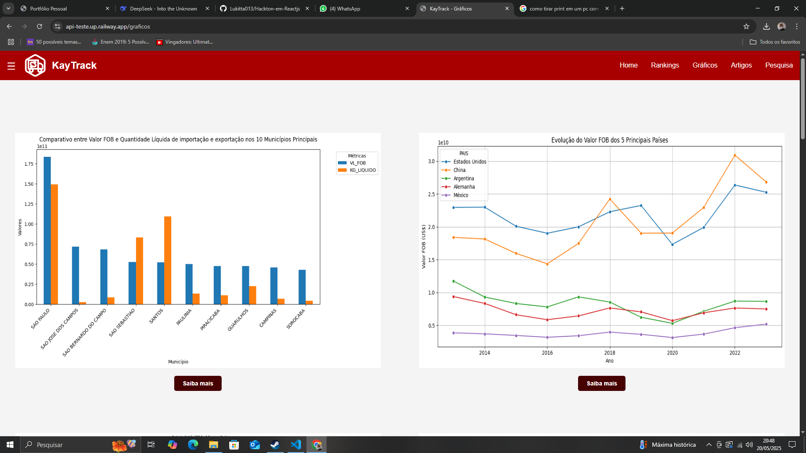
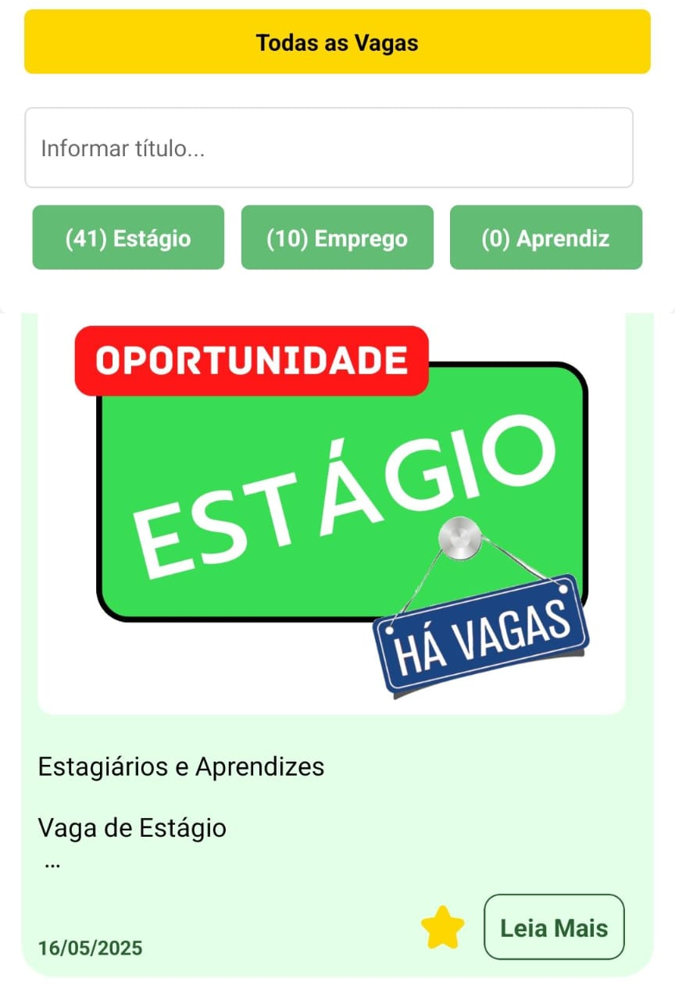
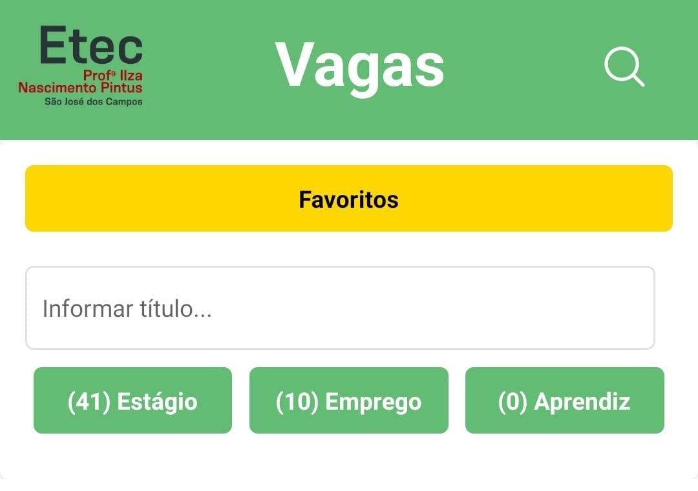

Olá, eu sou o Lucas Inácio de Carvalho, tenho 19 anos e sou um programador, apaixonado por tecnologia e
história. Amante dos esportes, em busca constante da felicidade.
Competências técnicas
Aqui está algumas linguagens de programação, ferramentas e frameworks que tenho conhecimento:




Skills
SoftSkill
Altamente interativo, sempre disposto a uma boa conversa, gosto sempre de entender o outro e tentar ajudar
naquilo que for de meu alcance.
HardSkill
Desenvolvimento de aplicativos móveis e funcionais. Conhecimento nas linguagens Java, PHP, Python, C#.
Minhas Formações
Formação
Desenvolvimento de Software multiplataforma - Tecnologia da informação
FATEC - São José dos Campos-SP
Status: Cursando o primeiro semestre, com previsão de fim no final de 2027
Desenvolvimento de sistemas - Tecnologia da informação
ETEC - São José dos Campos-SP
Concluído: 2024
Ensino médio
Ilza Irma Moeller Cóppio - São José dos Campos-SP
Concluído: 2023
Segurança da informação - Tecnologia da informação
Instituto Alpha Lumen - São José dos Campos-SP
Concluído: 2023
Solução completa de autoatendimento para estabelecimentos gastronômicos.
Minhas realizações:
- Liderança no desenvolvimento front-end
- Implementação do sistema de QR Codes
- Modelagem do banco de dados
- Integração entre front-end e back-end
- Criação do painel administrativo
Projeto API Key-Track



Sistema para análise de dados de importação/exportação do estado de São Paulo (2013-2025)
Minhas principais contribuições:
- Modelagem completa da arquitetura do software
- Desenvolvimento do sistema de rotas (router)
- Implementação dos filtros dinâmicos
- Integração com a base de dados
- Criação da interface de visualização dos dados
Projeto Hackaton ETEC Jobs


Aplicativo para divulgação de vagas de estágio desenvolvido em 72h durante hackathon da ETEC.
Minhas contribuições:
- Desenvolvimento completo do sistema de pesquisa
- Implementação dos filtros por tipo de vaga
- Criação do componente de favoritos
- Design responsivo das telas principais
- Integração com back-end para consumo de dados